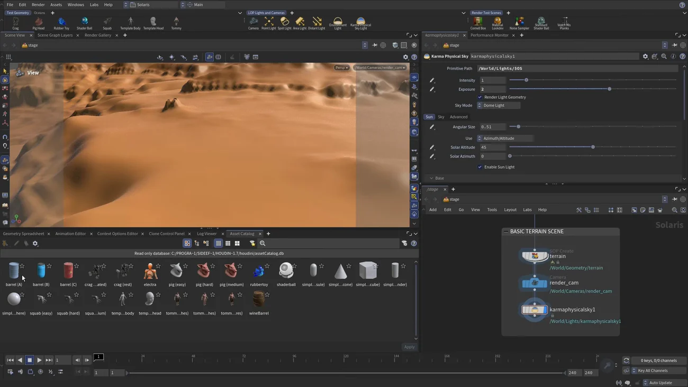
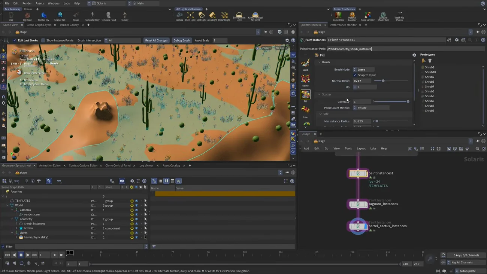

Solaris でインスタンスをペイント配置する
出典: Houdini 22 | How to Paint Instances in Solaris （SideFX 公式「Houdini 22 How-To」の1本 / Houdini 22 / 13:00 / 英語）。 このページは、上記の動画を見ながら自分用にまとめた日本語の学習メモです。SideFX 公式の翻訳ではありません。
何ができる機能か
Paint Instances LOP は、ブラシでアセットのインスタンスをジオメトリの上に置いていく機能です。 配置も編集もすべてビューポート内で行うので、レイアウト作業を手で作り込めます。
ブラシは大きく生成系（generators）と修正系（modifiers）に分かれます。
重要な仕様: Paint Instances が作るのは point instancer だけです （USD のインスタンシング方式のうちの1つ）。
1. 下準備
- 新しいペインを開き Solaris → Asset Catalog。既定では Houdini 付属のテストジオメトリのカタログが出ます
- 自分のカタログを作るには Create New Asset Database File → ディスクに保存 → アセットを追加。 Add Asset（1つ）と Add Directory（そのディレクトリのファイルとバリアントを全部）が選べます

シーンは terrain ＋ render camera ＋ physical sky だけの最小構成です。
注意: Paint Instances のブラシの一部は空のシーンでは動きません — ペイント先のジオメトリが必要です。平らでいいなら Grid 1枚でも構いません。
2. Place ブラシ — 1本ずつ置く
- Paint Instances を作って繋ぎ、
saguaro_instancesと命名。 プリムパスを正しい場所に（/world/geometryの子になるよう）指定します - Prototypes ボタンでアセットカタログを開き、使うアセット（サボテン）を追加します
- Place ブラシに切り替えます。一番基本のブラシで、1つずつ置いていきます
- Normal Blending を下げます — 斜面に置いたとき横向きに倒れるのを防ぎます
置くたびに回転がランダムに振られます。 ランダムスケールもかかるので全部同じ大きさにはなりません。
| 操作 | できること |
|---|---|
クリック＆ホールド → Shift | スケール |
クリック＆ホールド → Ctrl | 向き（増分回転と自由回転があります） |
操作方法はビューポートにヒントとして出ているので、覚えなくても進められます。
3. Paint ブラシ — 散らす
- 2つ目の Paint Instances を作り
barrel_cactus_instancesと命名。 プリムパスは1つ目からコピペして同じ場所に入れます - Paint ブラシに切り替えます。円形のブラシカーソルになります
| 操作 | 内容 |
|---|---|
| 中ボタンのホイール | ブラシサイズを変えます |
Shift ＋ ホイール | 一度に置く数を増減できます。多すぎたら減らして塗り直します |
プロトタイプはランダムに選ばれます。 1種類だけ使いたいときは、その1つを選択しておきます。
4. Fill ブラシ — 範囲を囲んで散らす
低木は別の作り方をします。
- Point Instancer ノードで大量の低木を Empty Point Instancer に入れておきます
- そこに Paint Instances を挿し、既存の point instancer を指すように設定します。 プロトタイプが無い状態だとエラーになるので、指定したらステートに入り直します
- Fill ブラシに切り替えます。Lasso で囲んだ範囲の中に散らせます
- Normal Blend を少し下げます
Edit Last Stroke が要点
ストロークを引く前に Edit Last Stroke をオンにしておきます。 これがこの回で一番効くところで、ストロークを引いた後に散布設定を変えられるようになります。

塗ってから密度やスケールを詰められるので、一発で決める必要がありません。 オフのまま塗ると、気に入らなければ塗り直しになります。
| 設定 | 内容 |
|---|---|
| Snap to Input | オンなら、インスタンスは確実にジオメトリの上に乗ります |
| Size | インスタンス同士の間隔です |
| Scale | インスタンス自体の大きさです。最大・最小を設定できます |
Size と Scale の違いは最初に迷うところだと思います。 Size は「どれくらい離れて並ぶか」、Scale は「どれくらい大きいか」です。 Size を大きくすると密度が下がり、Scale を大きくすると1つ1つが大きくなります。
5. 修正系のブラシ
| ブラシ | 使い方 |
|---|---|
| Delete | 塗って消します。動画ではサボテンに重なった低木を消すのに使っています。 「サボテンの真横に生えるのは不自然だから」という理由です |
| Replace | 塗った範囲のインスタンスを別のプロトタイプに置き換えます。
Ctrl + クリックで使う種類を絞ってから塗ると、
その範囲だけ特定の低木に統一できます |
他にも積み重ねるブラシやアセットで線を引くブラシがあります。
Delete で「置いてはいけない場所」を消していくという進め方が実際的だと思いました。 自動散布では作れない「サボテンの周りだけ空いている」という状態を、塗って作れます。
この回のまとめ
- 作るのは point instancer だけです（USD のインスタンシング方式の1つ）
- 一部のブラシは空のシーンでは動きません。Grid 1枚でも置いておきます
- ブラシは3つ。Place（1つずつ）/ Paint（散らす）/ Fill（囲んで散らす）
- Normal Blending を下げると、斜面で横倒しになるのを防げます
Shift+ホイールで一度に置く数を変えられます- ストロークの前に Edit Last Stroke をオンに。後から密度やスケールを詰められます
- Snap to Input で確実にジオメトリの上に乗ります
- Size は間隔、Scale は大きさです
- Delete と Replace で後から整えます。「ここには生えない」を手で作れるのが手置きの強みです
大量に自動で散らしたい場合はScatter Instances の回が対応します。 あちらは点群を用意せず、プリムを指定するだけで散らせます。